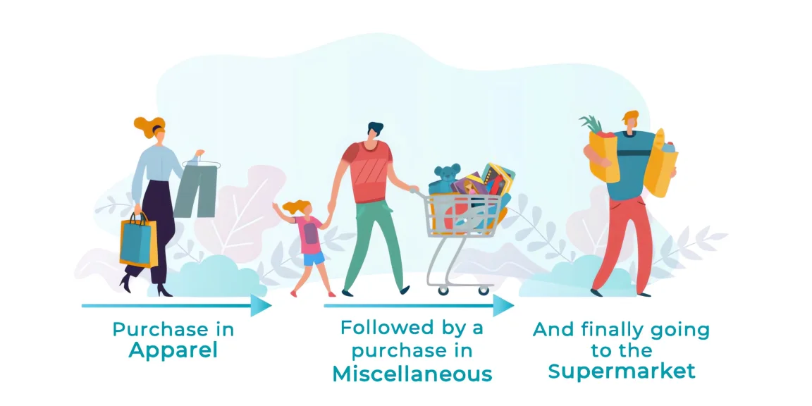

Projects
Applied data science in retail, healthcare and industry.
-

Featured in an investor relations report
Customer Shopping Behavior with Apriori Analysis
Identifying which stores customers visit on the same trip through purchase patterns and the Apriori algorithm.
Market basket analysis · Apriori · mlxtend
-
Occupational health
COVID-19 Data Platform in Metallurgical Plants
Helping medical teams identify high-risk sites by comparing factory data with local COVID-19 trends.
API pipelines · Flask · Tableau
-
Academic research
RAG Chatbot with LangChain
Making my master’s thesis searchable through a chatbot that answers questions using passages from the research.
LangChain · Chroma · E5-Large
-

Featured in an investor relations report
Geospatial Data Science for Customer Engagement
Using location data to understand shopping mall visits and how customers respond to promotional campaigns.
Heat maps · Folium · Mixpanel
-
Industrial operations
Predictive Maintenance of Mining Trains
Identifying trains at risk of bearing failure so maintenance teams can intervene before a breakdown.
Classification · scikit-learn · TensorFlow
-

Featured in an investor relations report
Recommendation Engine for Retail Coupons
Personalizing coupon offers to increase app engagement and sales.
Personalized recommendations · Behavioral data
-

Product analytics
Graph Analysis in App Navigation
Mapping journeys between app features to see which services people use together.
Directed graphs · NetworkX · Pyvis
-

Featured in an investor relations report
Creating Customer Personas of Loyalty Programs
Visualizing how loyalty program members move between stores and what they buy along the way.
Transaction analysis · Purchase probabilities
-

Natural language processing
Sentiment Analysis of Online Reviews
Tracking themes and customer sentiment in Portuguese-language product reviews.
Selenium · NLTK · Streamlit